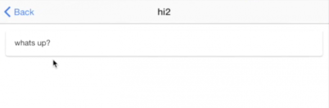

Now that you have installed the Ionic CLI you can generate your project using the blank template:
ionic start ionic-todo blank
Then open the /ionic-todo folder in your preferred code editor (VSCode & WebStorm works great for Ionic projects).
Ionic is built on the Angular framework for developing web applications so developing an Ionic 2+ application will be very similar to developing a standard Angular 2+ app.
All of the components for our application will be in the /src folder (including the root component in the /app folder, and all of our page components in the /pages folder). A component will consist of a template (.html file defining structure and elements), class definition (.ts file defining actions and logic) and styles (.scss file defining layout and appearance).
Along with components, you have providers (like the data service we will create later) which don’t have a html template or scss styling, but are similar in structure component's typescript class. These providers and will be placed in a providers folder.
Open the src/app/app.component.ts file that is auto generated:
import { Component } from '@angular/core';
import { Platform } from 'ionic-angular';
import { HomePage } from '../pages/home/home';
@Component({
templateUrl: 'app.html'
})
export class MyApp {
rootPage:any = HomePage;
constructor(platform: Platform) {
platform.ready().then(() => {
});
}
}
The app.component.ts file defines our root component. This component is special when compared to the rest of the components because it is the first component that will be added to the application, and from there we can display more components, which can then add even more components and so on. Basically, our application structure is like a tree with the root component at the root of that tree. So, it’s important that our root component knows where to find our HomePage as it will need to set it as the root page. Notice that we are importing the HomePage at the top of this file, and then setting it as the root page with the following code:
rootPage: any = HomePage;
We are able to declare variables above the constructor to make them member variables or class members,
meaning they will be accessible throughout the entire class by referencing this.myVar and it will also
be available to your templates. In this case, we are creating a class member called rootPage that we will
be able to access throughout this class, and in the template. If we take a look at the associated template
that is in src/app/app.html we would see:
<ion-nav [root]="rootPage"></ion-nav>
The template is accessing that class member that is stored in the TypeScript class file to configure the
<ion-nav> component. Remember every component you create will consist of a .html
template file and a .ts typescript class file.
The root page is the first page that will be displayed in your application, and then you can navigate to other pages from there. To change views in an Ionic application you can either change this root page, or push and pop views on top of that page. Pushing a view will change to that view, and popping it will remove it and go back to the previous view.
Now that we’ve got our basic application set up, we will set up our todo list template in our home page.
<ion-header>
<ion-navbar color="secondary">
<ion-title>
Todos!
</ion-title>
<ion-buttons end>
<button ion-button icon-only (click)="addItem()"><ion-icon name="add-circle"></ion-icon></button>
</ion-buttons>
</ion-navbar>
</ion-header>
<ion-content>
<ion-list>
<ion-item *ngFor="let item of items" (click)="viewItem(item)">{{item.title}}</ion-item>
</ion-list>
</ion-content>
Take notice of the * syntax used here for the *ngFor in the list,
this is shorthand for creating an embedded template. So rather than literally rendering out:
<ion-item *ngFor="let item of items" (click)="viewItem(item)">{{item.title}}</ion-item>
to the DOM (Document Object Model), an embedded template will be created for each items specific data.
So, if our items array (which will be defined later in the class definition) had 4 items in it, then
the <ion-item> would be rendered out 4 times.
Also notice that we are using let item, which assigns a
single element from the items array to item as we loop through the array.
This allows us to reference its properties, and also pass it into the viewItem function.
We are also setting the title to Todos! and we are supplying a button using <ion-buttons>.
Since we have supplied the end attribute, the button will be placed in the “end” position.
Different attributes may behave differently depending on what platform they are running on,
but on iOS for example, “end” will place the button to the right of the nav bar. Also note
that on the button itself we give it an attribute of ion-button which will give the button the Ionic styling,
as well as icon-only which styles buttons that only contain an icon and no text.
We are using (click) to attach a click listener to this element, which will call the addItem()
function in home.ts (which doesn’t exist yet).
Now that we have our template sorted, we need to create the functions we are referencing in our HomePage class, and we also need to supply the items data (we will just set up some dummy data initially).
import { Component } from '@angular/core';
import { NavController } from 'ionic-angular';
@Component({
selector: 'page-home',
templateUrl: 'home.html'
})
export class HomePage {
public items;
constructor(public navCtrl: NavController) {
}
ionViewDidLoad(){
this.items = [
{title: 'hi1', description: 'test1'},
{title: 'hi2', description: 'test2'},
{title: 'hi3', description: 'test3'}
];
}
addItem(){
}
viewItem(){
}
}
We are assigning a type of NavController to the navCtrl parameter in the constructor.
This is how dependency injection works in Ionic (or any Angular app), and is basically a way of telling the application
“we want navCtrl to be a reference to NavController“. By adding the public keyword in front of it,
it automatically creates a member variable for us.
This means that we can now reference the NavController anywhere in this class by using this.navCtrl.
Now that we’ve set up some dummy data (we use the ionViewDidLoad lifecycle hook to do this, which is
triggered as soon as the page is loaded), you should be able to see items rendered in your list when you run
ionic serve in your console:
Since we have imported the NavController service, we will
be able to push and pop views from this component by using:
this.navCtrl.push(SOME_PAGE); // To navigate to a new page in the stack
this.navCtrl.pop(); // To navigate backwards in the stack
We’ve also created function placeholders for adding items and viewing items, but before we can take this any further we are going to have to create a AddItemPage and ItemDetailPage component.
We’re going to create a new component that will allow us to add new todo’s. This will be a simple form where we supply a title and description.
ionic g page AddItem
Whenever we create a new page, we need to ensure that it is imported into our app.module.ts,
and declared in the declarations and entryComponents arrays.
import { BrowserModule } from '@angular/platform-browser';
import { NgModule, ErrorHandler } from '@angular/core';
import { IonicApp, IonicModule, IonicErrorHandler } from 'ionic-angular';
import { MyApp } from './app.component';
import { HomePage } from '../pages/home/home';
import { AddItemPage } from '../pages/add-item/add-item';
@NgModule({
declarations: [
MyApp,
HomePage,
AddItemPage
],
imports: [
BrowserModule,
IonicModule.forRoot(MyApp)
],
bootstrap: [IonicApp],
entryComponents: [
MyApp,
HomePage,
AddItemPage
],
providers: [{provide: ErrorHandler, useClass: IonicErrorHandler}]
})
export class AppModule {}
<ion-header>
<ion-toolbar color="secondary">
<ion-title>
Add Item
</ion-title>
<ion-buttons end>
<button ion-button icon-only (click)="close()"><ion-icon name="close"></ion-icon></button>
</ion-buttons>
</ion-toolbar>
</ion-header>
<ion-content>
<ion-list>
<ion-item>
<ion-label floating>Title</ion-label>
<ion-input type="text" [(ngModel)]="title"></ion-input>
</ion-item>
<ion-item>
<ion-label floating>Description</ion-label>
<ion-input type="text" [(ngModel)]="description"></ion-input>
</ion-item>
</ion-list>
<button full ion-button color="secondary" (click)="saveItem()">Save</button>
</ion-content>
We a button calling a saveItem() function that we will define in add-item.ts shortly.
We also have a button that references a close() function –
since we will eventually launch this page as a Modal we want the ability to dismiss the page,
so we will also be defining this function in add-item.ts.
Then we have some inputs, and on them, we have [(ngModel)], which sets up two-way data binding for us.
Any change we make to the title field will be immediately reflected on the this.title
member variable in add-item.ts (which we will also add shortly). The same goes in reverse, any change
we make to this.title in add-item.ts will also be immediately reflected in the template.
Also notice that on our save button we use the full attribute, this is a handy little attribute that will
make the button full width for us.
import { Component } from '@angular/core';
import { NavController, ViewController } from 'ionic-angular';
@Component({
selector: 'page-add-item',
templateUrl: 'add-item.html'
})
export class AddItemPage {
title: string;
description: string;
constructor(public navCtrl: NavController, public view: ViewController) {
}
saveItem(){
let newItem = {
title: this.title,
description: this.description
};
this.view.dismiss(newItem);
}
close(){
this.view.dismiss();
}
}
We’re importing a new service ViewController as view which can be used with Modals to dismiss (close) them.
Apart from that, we are just creating the saveItem() function which sets up a newItem object,
which will use the current values of title and description
(i.e. whatever the user puts in the input fields we set up two-way data binding on). We then dismiss the view,
but we also pass in that new item to the dismiss function.
This will allow us to set up a listener back on our home page to grab that item.
In this way, we can pass data from one page to another.
We are sending some data back to the HomePage component to be saved, so we are going to have to set that up. We are also going to import our new AddItemPage component into the HomePage so that we can create that view when the user clicks Add Item.
import { Component } from '@angular/core';
import { ModalController, NavController } from 'ionic-angular';
import { AddItemPage } from '../add-item/add-item'
@Component({
selector: 'page-home',
templateUrl: 'home.html'
})
export class HomePage {
public items = [];
constructor(public navCtrl: NavController, public modalCtrl: ModalController) {
}
addItem(){
let addModal = this.modalCtrl.create(AddItemPage);
addModal.onDidDismiss((item) => {
if(item){
this.saveItem(item);
}
});
addModal.present();
}
saveItem(item){
this.items.push(item);
}
viewItem(item){
}
}
If you look at the top of this file, you can see that we are now importing the AddItemPage component.
This will allow us to create a Modal using that page, as we are doing in the addItem() function.
Notice that we also set up the onDidDismiss() listener here, which will grab that item that is being passed back
and then save it using the saveItem() function.
For now we just save an item by pushing it into the items array, but eventually we will save it into storage.
We’ve also removed the dummy data, because now when a user enters in a new item it will be added to this.items
through the saveItem() function. We also set items to be an empty array initially.
Save all your files and if ionic serve is running you should see your home page now allows you to add new
items via a modal and when you return to the home page the items should display in a list.
Now we want to add the ability to click on a specific todo list item, and then view the details of that item (i.e. the description). To do this, we are going to create a new page component.
ionic g page ItemDetail
and once again, we will need to set it up in our app.module.ts file:
import { BrowserModule } from '@angular/platform-browser';
import { NgModule, ErrorHandler } from '@angular/core';
import { IonicApp, IonicModule, IonicErrorHandler } from 'ionic-angular';
import { MyApp } from './app.component';
import { HomePage } from '../pages/home/home';
import { AddItemPage } from '../pages/add-item/add-item';
import { ItemDetailPage } from '../pages/item-detail/item-detail';
@NgModule({
declarations: [
MyApp,
HomePage,
AddItemPage,
ItemDetailPage
],
imports: [
BrowserModule,
IonicModule.forRoot(MyApp)
],
bootstrap: [IonicApp],
entryComponents: [
MyApp,
HomePage,
AddItemPage,
ItemDetailPage
],
providers: [{provide: ErrorHandler, useClass: IonicErrorHandler}]
})
export class AppModule {}
Now let’s set up our new page component.
<ion-header>
<ion-navbar color="secondary">
<ion-title>
{{title}}
</ion-title>
</ion-navbar>
</ion-header>
<ion-content>
<ion-card>
<ion-card-content>
{{description}}
</ion-card-content>
</ion-card>
</ion-content>
Compared to the rest of the templates, this one is pretty straight forward. We’re just using the <ion-card>
component to display the title and
description which will be defined in item-detail.ts.
import { Component } from '@angular/core';
import { NavParams } from 'ionic-angular';
@Component({
selector: 'page-item-detail',
templateUrl: 'item-detail.html'
})
export class ItemDetailPage {
title;
description;
constructor(public navParams: NavParams){
}
ionViewDidLoad() {
this.title = this.navParams.get('item').title;
this.description = this.navParams.get('item').description;
}
}
When we push this page we will pass in the data of the item that was clicked, and then we just set the title and description to that of the item using NavParams.
Now all we have to do is set up the viewItem function in home.ts and import the new detail page.
viewItem(item){
this.navCtrl.push(ItemDetailPage, {
item: item
});
}
import { ItemDetailPage } from '../item-detail/item-detail';
This will push the item detail page, and pass in the item in the list that was clicked. If you try clicking on an item in the list now, you should see something like this:
The todo application will basically work now, but the data isn’t being stored anywhere so as soon as you refresh the application you will lose all of your data (not ideal).
What we’re going to do now is create a service called Data that will handle storing and retrieving data for us. We will use the Storage service Ionic provides to help us do this. Storage is Ionic’s generic storage service, and it handles storing data in the best way possible while providing a consistent API for us to use.
ionic g provider Data
import { Storage } from '@ionic/storage';
import { Injectable } from '@angular/core';
@Injectable()
export class Data {
constructor(public storage: Storage){
}
getData() {
return this.storage.get('todos');
}
save(data){
this.storage.set('todos', data);
}
}
This one is a little bit different to the rest of the classes we have been creating.
Instead of using the @Component decorator, we are instead declaring this class as an @Injectable.
In our constructor, we set up a reference to the Storage service as storage.
Our save() function simply takes in the array of all of the items and saves it to storage,
whenever the items change we will call this function.
We will also need to set up the Storage service (which requires us to include a IonicStorageModule import in the @NgModule),
as well as the Data provider, in our app.module.ts file.
import { BrowserModule } from '@angular/platform-browser';
import { NgModule, ErrorHandler } from '@angular/core';
import { IonicApp, IonicModule, IonicErrorHandler } from 'ionic-angular';
import { IonicStorageModule } from '@ionic/storage';
import { MyApp } from './app.component';
import { HomePage } from '../pages/home/home';
import { AddItemPage } from '../pages/add-item/add-item';
import { ItemDetailPage } from '../pages/item-detail/item-detail';
import { Data } from '../providers/data';
@NgModule({
declarations: [
MyApp,
HomePage,
AddItemPage,
ItemDetailPage
],
imports: [
BrowserModule,
IonicModule.forRoot(MyApp),
IonicStorageModule.forRoot()
],
bootstrap: [IonicApp],
entryComponents: [
MyApp,
HomePage,
AddItemPage,
ItemDetailPage
],
providers: [Data, {provide: ErrorHandler, useClass: IonicErrorHandler}]
})
export class AppModule {}
Notice that we have declared the Data provider in the declarations or entryComponents arrays.
IonicStorageModule.forRoot() is set in the imports array.
Now we need to update home.ts to make use of this new service.
import { Component } from '@angular/core';
import { ModalController, NavController } from 'ionic-angular';
import { AddItemPage } from '../add-item/add-item'
import { ItemDetailPage } from '../item-detail/item-detail';
import { Data } from '../../providers/data';
@Component({
selector: 'page-home',
templateUrl: 'home.html'
})
export class HomePage {
public items = [];
constructor(
public navCtrl: NavController,
public modalCtrl: ModalController,
public dataService: Data
) {
this.dataService.getData().then((todos) => {
if(todos){
this.items = todos;
}
});
}
addItem(){
let addModal = this.modalCtrl.create(AddItemPage);
addModal.onDidDismiss((item) => {
if(item){
this.saveItem(item);
}
});
addModal.present();
}
saveItem(item){
this.items.push(item);
this.dataService.save(this.items);
}
viewItem(item){
this.navCtrl.push(ItemDetailPage, {
item: item
});
}
}
Lastly, we’re importing the data service and passing it through to our constructor.
We are still setting the items to be empty to start off with, and fetching the data using the data service.
If there are any items returned it will set items to that, but if there is not it will just set it to an empty array again.
It’s important to note here that getData() returns a promise not the data itself. Fetching data from storage
is asynchronous which means our application will continue to run while the data loads. A promise allows us
to perform some action whenever that data has finished loading, without having to pause the whole application.
Finally, we also add a call to the save() function in the data service when a new item is being added.
So now this function will update our items array with the new data straight away,
but it will also save a copy to the data service so that it is available next time we come back to the application.
You have learned how to use Ionic Framework to generate a simple todo app!